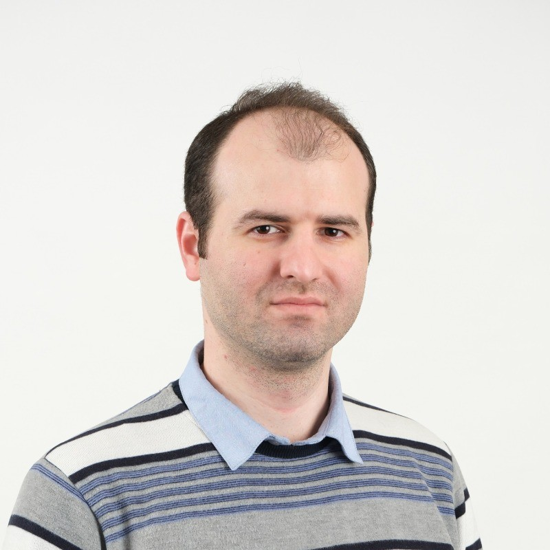
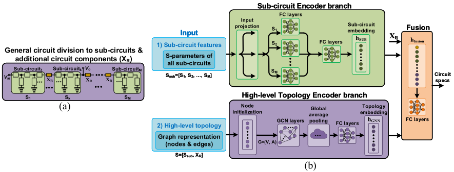

Soroosh Noorzad
Ph.D. Student, Electrical and Computer Engineering
University of Utah
Soroosh Noorzad is a Ph.D. student in Electrical and Computer Engineering at the University of Utah, advised by Dr. Morteza Fayazi. His research focuses on machine learning for electronic design automation, particularly RF circuit modeling and inverse design.
He works with neural networks, surrogate models, and generative methods to improve the efficiency of circuit modeling and automated design. He is interested in applying machine learning to challenging problems in EDA, circuit design, and other engineering fields.
Research
How can a model learn from both circuit components and the way they connect? In TARGet (code), I explore topology-aware models that predict RF behavior across circuit designs. In FInDeR (which is under review), I work in the reverse direction: generating candidate circuits from desired performance and using surrogate models to select them.
Areas: Electronic design automation · Graph neural networks · RF circuits · Inverse design

Figure 1 from Noorzad, Bodero, and Fayazi, TARGet (2026), reproduced unchanged under CC BY 4.0.
Publications
- TARGet: Topology-Aware Fusion-based Radio Frequency Circuit Functional Modeling using Graph Neural Networks IEEE/ACM International Conference on Computer-Aided Design (ICCAD), 2026.
- SINA: A Circuit Schematic Image-to-Netlist Generator Using Artificial Intelligence Design, Automation and Test in Europe Conference (DATE), 2026.
- MuaLLM: A Multimodal Large Language Model Agent for Circuit Design Assistance with Hybrid Contextual Retrieval-Augmented Generation IEEE Asia and South Pacific Design Automation Conference (ASP-DAC), 2026.
Research experience
-
FInDeR — ML-Based RF Circuit Inverse Design
Developing generative inverse-design methods for passive RF circuits, with surrogate-based candidate selection to connect performance targets to candidate designs.
-
TARGet — Topology-Aware RF Circuit Modeling
Combining sub-circuit behavior and circuit connectivity in a graph-based model to predict RF performance across multiple topologies with less training data.
-
Machine Learning for Multi-access Edge Computing Networks
Studied machine learning methods for multi-access edge computing networks during my master's research.
Education
- Ph.D. in Electrical and Computer Engineering
- M.Sc. in Electrical Engineering, Digital Systems
- B.Sc. in Electrical Engineering, Telecommunication
Awards and honors
- Student Scholarship Program Award
- Graduate Student Professional Development Supplement Award
- 3rd place, poster competition
- Ranked 23rd nationally
Technical skills
- Languages & numerical computing:
- Python, C/C++, MATLAB
- Machine learning:
- PyTorch, TensorFlow, Scikit-learn
- Tools & platforms:
- CUDA, Linux, Git
Scan to connect
Scan a code to open my website, LinkedIn, or CV.